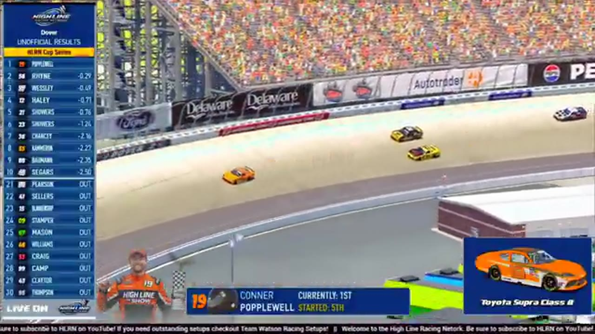

Connor Papowell
Team assignment not stated in the structured owner record.
1 RECOVERED WIN / EVERY ONE RECEIPTED
- Official files
- 2
- Central editions
- 1
- Exact tape cues
- 3
- Accepted podiums
- 1
Connor Papowell's accepted HLRN result file contains 1 supported feature win and 1 recovered podium: S1 R13 at Dover (P1). A consistently stated team affiliation remains open for owner review. The currently indexed source window runs from February 16, 2026 through February 24, 2026.
The searchable official-broadcast footprint covers 2 race files, with the heaviest repeated track signal at Talladega. 1 Highline Central edition and 3 primary-race jump points connect the result ledger back to the tape. The densest direct-tape categories are finish (2 cues) and postrace (1 cue). Those counts describe where the name is easiest to find; they are not fault, pace, or performance grades. A source-attributed car frame is published with its original video and timestamp. That is the current discovery map for Connor Papowell.
No unsupported start total, full points total, car number, or finishing position is added around those receipts. The dossier grows from accepted results and source appearances, not from broadcast-name volume. Separately, 3 Highline Live files sit on the bonus shelf and never enter the official season ledger. The displayed name is labeled transcript normalized; that status remains visible so an owner roster can strengthen or correct the identity without rewriting the evidence trail. Those boundaries define Connor Papowell's public HLRN file.
3 featured race-tape cues
These are discovery routes into complete HLRN broadcasts, not performance grades or inferred results.
- S1 / R13 · FINISH
Trevor Haley and Connor Papowell enter the final-lap decision
S1 / R13 at 1:47:59: The white flag opens the final-lap decision at Dover, with Trevor Haley, Connor Papowell, Tommy Ryan, and Grant Wesley named in the decisive group. The cut continues through the immediate finish call on the full primary broadcast.
Dover - S1 / R13 · FINISH
Connor Papowell reaches the Dover checkered
S1 / R13 at 1:48:33: The primary tape calls Connor Papowell at the Dover checkered and carries the first replay of the finish. The result label is tied to the accepted ledger.
Dover - S1 / R13 · POSTRACE
Eric Hayden and Trevor Haley anchor the Dover post-race result review
S1 / R13 at 1:53:48: The reviewed live-race close has passed before this Dover result booth review begins with Eric Hayden, Trevor Haley, and Connor Papowell named in the discussion. It remains post-race context, not a new incident, stage, strategy call, finish, or result receipt.
Dover
Recent editions connected to Connor Papowell
Verified team history is not consistently stated. Complete starts, finishes, and points remain open beyond the recovered results. Name normalization remains reviewable against owner records.